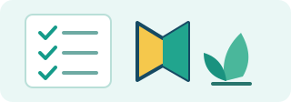
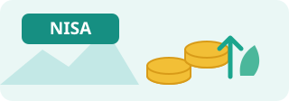
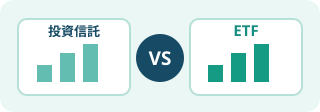
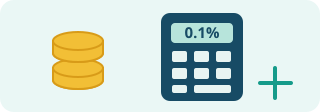
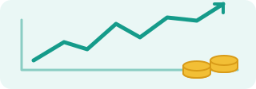

生活資金や投資の目的、値下がりへの備えを確認します。
投資前の7項目を読む →NEW TO INVESTING?
初めての方へ
投資は、いきなり商品を選ばなくても大丈夫。まずは基本を知り、自分に合う考え方を少しずつ見つけましょう。
NISAや投資信託・ETFの違いを、図解と一緒に学びます。
新NISAの基本を読む →費用・リスク・投資対象を確認し、商品選びの視点を整理します。
商品選びの視点を読む →公式情報を優先公的機関・公式資料を確認
リスクも説明メリットだけに偏らない解説
初心者にもわかりやすく仕組み・費用・注意点を整理
Learn at your own pace
気になるテーマから、楽しく学ぼう
イラスト付きのカードを選ぶと、解説記事へ移動します。

まずはここから投資を始める前に確認したい7つのこと
生活資金、目的、期間、リスク許容度など、始める前の準備を整理。
基礎を確認する →
制度を知る新NISAの仕組みと投資枠
つみたて投資枠・成長投資枠と、非課税保有限度額を解説。
NISAを学ぶ →
違いを比べる投資信託とETFの違い
価格の決まり方、注文方法、費用などの比較ポイントを整理。
違いを比較する →NISAで投資信託を選ぶ7つの視点
投資対象、分散、費用、リスク、目論見書の確認方法を解説。
選び方を確認する →
コストを知る投資信託の信託報酬と費用
保有中のコストや年率の見方、実質コストの確認方法を解説。
費用を確認する →
コツコツ資産形成積立投資の仕組みと注意点
定額購入の仕組み、購入時期の分散、元本割れの可能性を解説。
積立投資を学ぶ →最終更新：2026年10月24日